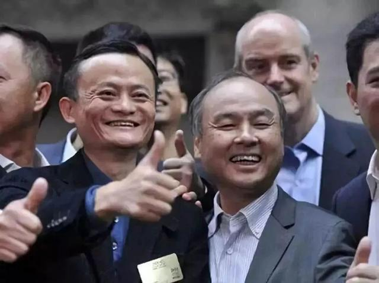
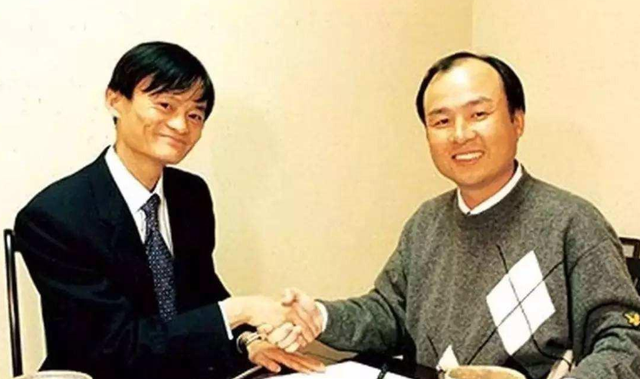

2020年对于所有人来说都是不寻常的一年，马云和孙正义这对曾经联手创造了世界级财富神话的人，如今，又是同命相怜：一个忙着断臂求生，一个忙着到处发声明。
孙正义由于豪掷千亿美元做基金又遭遇接连亏损，今年差不多变卖了800亿美元资产，以求度过寒冬。马云则把煮熟的鸭子“蚂蚁上市”弄飞了，至今还没有缓过劲来。
先来回顾一下两个人的财富神话历史：很多人以为当年马云到处找投资找不到，走投无路的时候遇到了生命中最重要的男人孙正义，其实这个故事应该反过来讲，应该是孙正义遇到了马云这个贵人，才赚取了人生中最大的一笔投资回报，还因为投资阿里巴巴，孙正义在阿里上市的时候，短暂的登上过世界首富的宝座。
马云的财富之路大家比较清楚，从做中国第一本黄页到最早的网络购物平台，再逐渐发展成庞大的阿里系，马云成了全世界最会赚钱的人之一。
这两个人有不少相似的地方，他们都是很早就对财富充满渴望，并且在赚钱的道路上异常执着，认准的事坚决去做，不达目的誓不罢休；第二他们都很善于煽动情绪、说服别人；第三，他们都很早就认准了科技、互联网领域。
先来看孙正义的发家史，他18岁就赚取人生第一个百万美元，90年代中期就掌握10亿美元财富。
1995年，当雅虎创始人杨致远和4个同学还窝在破烂狭小的房间里创业的时候，孙正义一下子投了一亿美元，造就后来的雅虎传奇。
1999年孙正义来到中国考察，他觉察到未来中国互联网市场的巨大发展前景，想要投资一家公司，但是看了很多项目之后都觉得不理想，这时候马云出现了。
当时的阿里虽然不富裕，但是早已经不用靠马云当翻译、卖花维持了，而且已经拿到了高盛领投的500万美元投资，马云回忆说当时其实并不是想去找投资的，是朋友介绍不好意思不去，就当是宣传宣传项目，没想到，孙正义慧眼识珠千挑万选就看中了阿里。
孙正义是不绕弯子的人，直接问马云你就说要多少钱吧，马云说我没打算要钱啊，孙正义说那不行咱们必须谈谈，你一定得让我投。于是，2000年1月，马云带着蔡崇信等人抱着无所谓就是去随便聊聊的心态飞到日本。
孙正义拿出4000万美元要占股50%，但是不管怎么说，冷静的蔡崇信都果断拒绝，来回谈了好几次实在推辞不过，就答应各退一步，钱只要2000万美元，股份给30%。孙正义表示：谢谢你给我一个商业机会，我们会一起创造奇迹的。